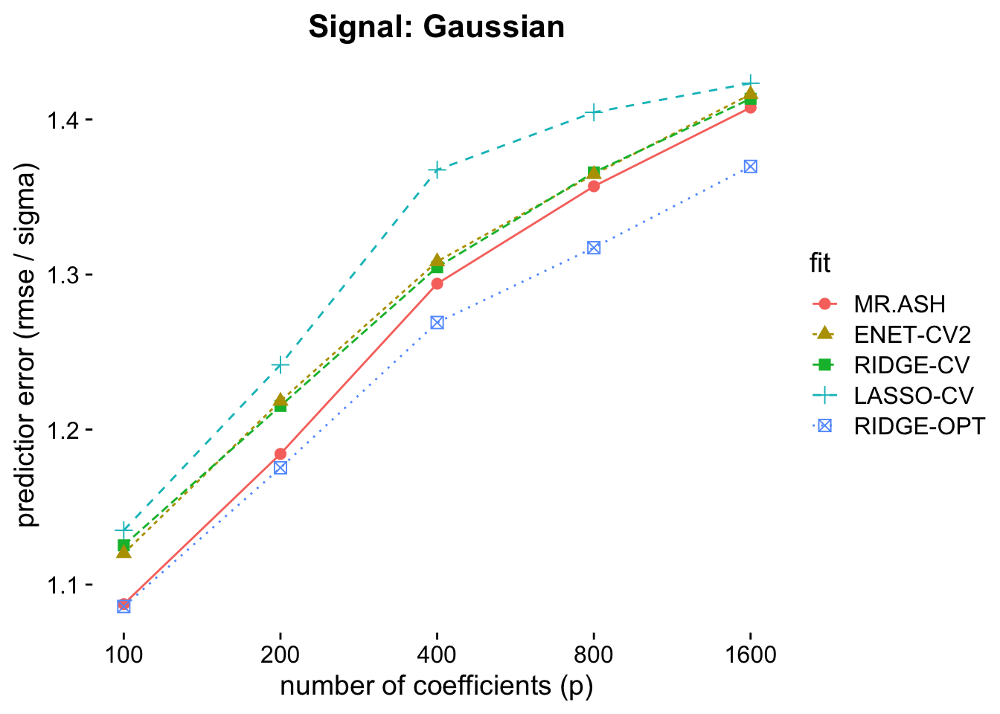
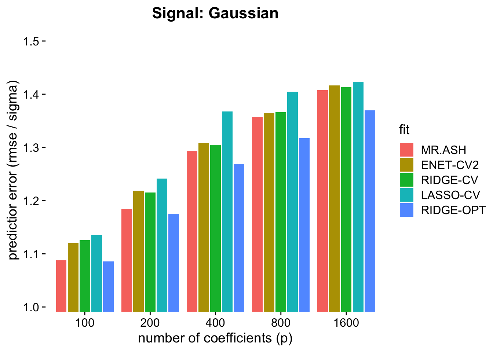
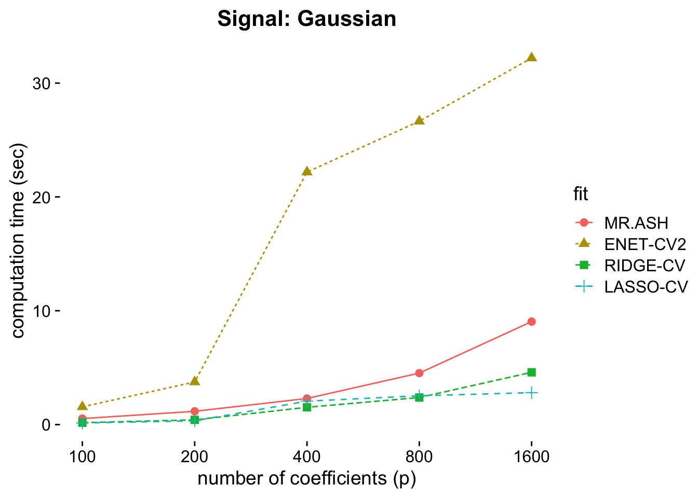
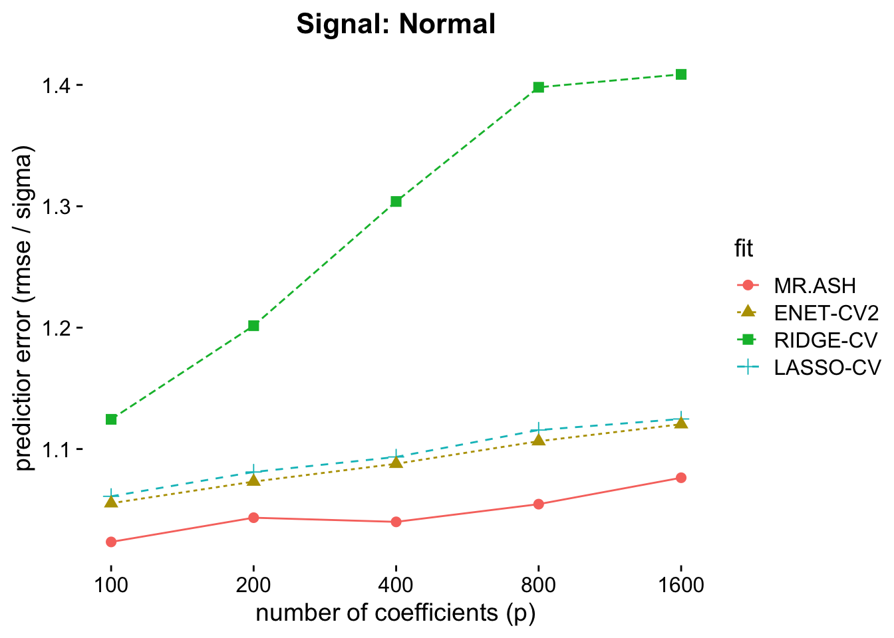
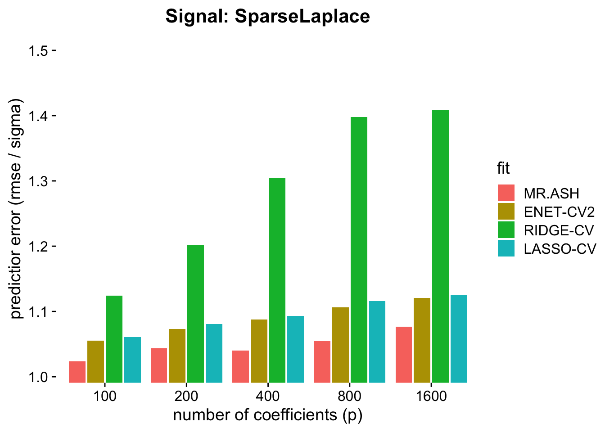
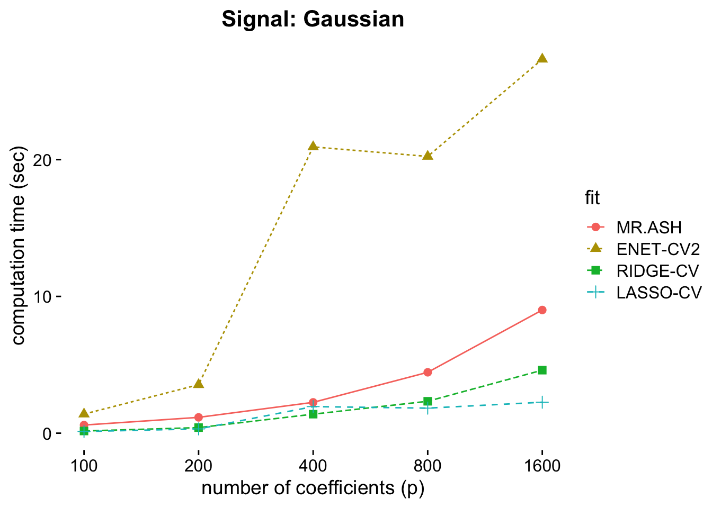

Last updated: 2019-10-05
Checks: 7 0
Knit directory: varbvs2/
This reproducible R Markdown analysis was created with workflowr (version 1.4.0). The Checks tab describes the reproducibility checks that were applied when the results were created. The Past versions tab lists the development history.
Great! Since the R Markdown file has been committed to the Git repository, you know the exact version of the code that produced these results.
Great job! The global environment was empty. Objects defined in the global environment can affect the analysis in your R Markdown file in unknown ways. For reproduciblity it’s best to always run the code in an empty environment.
The command set.seed(20190928) was run prior to running the code in the R Markdown file. Setting a seed ensures that any results that rely on randomness, e.g. subsampling or permutations, are reproducible.
Great job! Recording the operating system, R version, and package versions is critical for reproducibility.
Nice! There were no cached chunks for this analysis, so you can be confident that you successfully produced the results during this run.
Great job! Using relative paths to the files within your workflowr project makes it easier to run your code on other machines.
Great! You are using Git for version control. Tracking code development and connecting the code version to the results is critical for reproducibility. The version displayed above was the version of the Git repository at the time these results were generated.
Note that you need to be careful to ensure that all relevant files for the analysis have been committed to Git prior to generating the results (you can use wflow_publish or wflow_git_commit). workflowr only checks the R Markdown file, but you know if there are other scripts or data files that it depends on. Below is the status of the Git repository when the results were generated:
Ignored files:
Ignored: .Rhistory
Ignored: .Rproj.user/
Untracked files:
Untracked: .DS_Store
Untracked: .Rbuildignore
Untracked: analysis/.DS_Store
Untracked: analysis/ETA_1_lambda.dat
Untracked: analysis/ETA_1_parBayesB.dat
Untracked: analysis/Experiment_10_AdditionalCases.Rmd
Untracked: analysis/Experiment_3_UpdateOrder.Rmd
Untracked: analysis/Experiment_9_ChangePoint.Rmd
Untracked: analysis/mu.dat
Untracked: analysis/varE.dat
Untracked: misc/
Untracked: paperfigures/fig21.pdf
Untracked: paperfigures/fig22.pdf
Untracked: paperfigures/fig23.pdf
Untracked: paperresults/experiment3.rds
Untracked: paperresults/experiment3_1.rds
Untracked: paperresults/experiment3_2.rds
Untracked: paperresults/experiment3_3.rds
Untracked: paperresults/experiment3_4.rds
Untracked: results/Experiment_1_Lasso.RDS
Untracked: results/Experiment_1_Ridge.RDS
Untracked: results/Experiment_1_Sparse.RDS
Untracked: results/Experiment_2_Nonconvex_SparseLaplace.RDS
Untracked: results/Experiment_2_Nonconvex_SparseNormal.RDS
Untracked: results/Experiment_2_Nonconvex_SparseT.RDS
Untracked: results/Result_1_RidgeLasso.Rmd
Untracked: results/Result_2_Nonconvex.Rmd
Unstaged changes:
Modified: R/mr_ash_order.R
Modified: analysis/index.Rmd
Deleted: backup/caisa_acc.cpp
Deleted: backup/caisa_em.cpp
Deleted: backup/caisa_order.cpp
Deleted: backup/g.cpp
Deleted: code/README.md
Deleted: outputs/dat811.txt
Deleted: outputs/dat812.txt
Deleted: outputs/dat813.txt
Deleted: outputs/dat821.txt
Deleted: outputs/dat822.txt
Deleted: outputs/dat823.txt
Deleted: outputs/dat831.txt
Deleted: outputs/dat832.txt
Deleted: outputs/pred811.txt
Deleted: outputs/pred812.txt
Deleted: outputs/pred813.txt
Deleted: outputs/pred821.txt
Deleted: outputs/pred822.txt
Deleted: outputs/pred823.txt
Deleted: outputs/pred831.txt
Deleted: outputs/pred832.txt
Deleted: outputs/pred833.txt
Deleted: outputs/time811.txt
Deleted: outputs/time812.txt
Deleted: outputs/time813.txt
Deleted: outputs/time821.txt
Deleted: outputs/time822.txt
Deleted: outputs/time823.txt
Deleted: outputs/time831.txt
Deleted: outputs/time832.txt
Deleted: outputs/time833.txt
Modified: paper/.DS_Store
Modified: paper/Experiment_2_Nonconvex.Rmd
Modified: paper/Experiment_7_RealGenotype.Rmd
Modified: paperfigures/fig51.pdf
Modified: paperfigures/fig52.pdf
Modified: paperfigures/fig53.pdf
Modified: paperfigures/fig61.pdf
Modified: paperfigures/fig62.pdf
Modified: paperfigures/fig63.pdf
Modified: paperfigures/fig81.pdf
Modified: paperfigures/fig82.pdf
Modified: paperfigures/fig83.pdf
Modified: paperresults/experiment2.rds
Modified: results/.DS_Store
Deleted: results/.Rhistory
Deleted: results/dat101.txt
Deleted: results/dat102.txt
Deleted: results/dat103.txt
Deleted: results/dat11.txt
Deleted: results/dat111.txt
Deleted: results/dat112.txt
Deleted: results/dat113.txt
Deleted: results/dat12.txt
Deleted: results/dat121.txt
Deleted: results/dat122.txt
Deleted: results/dat123.txt
Deleted: results/dat124.txt
Deleted: results/dat13.txt
Deleted: results/dat131 copy.txt
Deleted: results/dat131.txt
Deleted: results/dat133.txt
Deleted: results/dat21.txt
Deleted: results/dat22.txt
Deleted: results/dat23.txt
Deleted: results/dat24.txt
Deleted: results/dat31.txt
Deleted: results/dat32.txt
Deleted: results/dat33.txt
Deleted: results/dat34.txt
Deleted: results/dat41.txt
Deleted: results/dat42.txt
Deleted: results/dat43.txt
Deleted: results/dat44.txt
Deleted: results/dat45.txt
Deleted: results/dat46.txt
Deleted: results/dat51.txt
Deleted: results/dat52.txt
Deleted: results/dat53.txt
Deleted: results/dat54.txt
Deleted: results/dat55.txt
Deleted: results/dat56.txt
Deleted: results/dat71.txt
Deleted: results/dat72.txt
Deleted: results/dat73.txt
Deleted: results/dat81.txt
Deleted: results/dat82.txt
Deleted: results/dat83.txt
Deleted: results/dat91.txt
Deleted: results/dat92.txt
Deleted: results/fig1.pdf
Deleted: results/fig10.pdf
Deleted: results/fig11.pdf
Deleted: results/fig12.pdf
Deleted: results/fig121.pdf
Deleted: results/fig122.pdf
Deleted: results/fig13.pdf
Deleted: results/fig2.pdf
Deleted: results/fig3.pdf
Deleted: results/fig31.pdf
Deleted: results/fig4.pdf
Deleted: results/fig41.pdf
Deleted: results/fig42.pdf
Deleted: results/fig7.pdf
Deleted: results/fig8.pdf
Deleted: results/fig9.pdf
Deleted: results/plots_for_paper.R
Note that any generated files, e.g. HTML, png, CSS, etc., are not included in this status report because it is ok for generated content to have uncommitted changes.
These are the previous versions of the R Markdown and HTML files. If you’ve configured a remote Git repository (see ?wflow_git_remote), click on the hyperlinks in the table below to view them.
| File | Version | Author | Date | Message |
|---|---|---|---|---|
| Rmd | 5a97d6b | Youngseok | 2019-10-05 | wflow_publish("analysis/Result*.Rmd") |
This .Rmd file is to plot results for the experiment MR.ASH versus Elastic Net (ENET). The experiment is based on the following simulation setting.
We sample the standard i.i.d. Gaussian measurement \(X_{ij} \sim N(0,1)\) anda construct \(X \in \mathbb{R}^p\) with \(n = 500\) and \(p \in \{100,200,400,800,1600\}\).
We will use two different signal settings.
We sample the i.i.d. normal coefficients \(\beta_j \sim N(0,\sigma_\beta^2)\) for \(j = 1,\cdots,p\), or \(\beta \sim N(0,\sigma_\beta^2 I_p)\).
We sample the i.i.d. sparse Laplace coefficients \(\beta_j \sim \textrm{Laplace}(1)\) if \(j \in J\) and \(\beta_j = 0\) otherwise, where \(J\) is a set of randomly \(20\) indices in \(\{1,\cdots,p\}\), chosen uniformly at random.
Then we sample \(y = X\beta + \epsilon\), where \(\epsilon \sim N(0,\sigma^2 I_n)\).
We fix PVE = 0.5, where PVE is the proportion of variance explained, defined by
\[
{\rm PVE} = \frac{\textrm{Var}(X\beta)}{\textrm{Var}(X\beta) + \sigma^2},
\] where \(\textrm{Var}(a)\) denotes the sample variance of \(a\) calculated using R function var. To this end, we set \(\sigma^2 = \textrm{Var}(X\beta)\).
The glmnet R package provides an elastic net implementation. It seeks to minimize the following objective function.
\[ \frac{1}{2n} \| y - X\beta \|^2 + \lambda \left(\alpha \|\beta\|_1 + 0.5 (1 - \alpha) \|\beta\|_2^2 \right) \]
\(\lambda\) and \(\alpha\) are tuning parameters. For a fixed \(\alpha\) in \(\{ 0.1 * (a-1) : a = 1,\cdots, 11\), we run cv.glmnet with the default setting to tune \(\lambda\) by cross-validation. Then we select a best tuple of \(\alpha\) and \(\lambda\) that minimizes the cross-validation error.
library(ggplot2); library(cowplot);
gg_color_hue <- function(n) {
hues = seq(15, 375, length = n + 1)
hcl(h = hues, l = 65, c = 100)[1:n]
}Let us recall that we sample the i.i.d. normal coefficients \(\beta_j \sim N(0,\sigma_\beta^2)\) for \(j = 1,\cdots,p\), or \(\beta \sim N(0,\sigma_\beta^2 I_p)\).
We expect that in this simulation setting, the ridge regression with the optimal tuning parameter \(\lambda\) will perform the best.
\[ p(\beta|y,X,\sigma^2) \propto p(y|X,\beta,\sigma^2) p(\beta) \propto \exp\left( - \frac{1}{2\sigma^2} \|y - X\beta\|_2^2 - \frac{1}{2\sigma_\beta^2} \|\beta\|_2^2 \right) \]
This implies that \(p(\beta|y,X,\sigma^2)\) is again a multivariate normal distribution and thus the posterior mode is equal to the posterior mean. Thus the optimal \(\lambda\) is \(\sigma^2 / (n\sigma_\beta^2)\).
dat1 = readRDS("results/Experiment_1_Ridge.RDS")
sdat = data.frame()
for (i in 1:5) {
dmat = matrix(dat1[[i]]$rmse, 20, 14)
nrmse = colMeans(dmat / dat1[[i]]$sigma)[c(1,2,12,13,14)]
time = colMeans(matrix(dat1[[i]]$t, 20, 14))
time[14] = sum(time[2:12])
time = time[c(1,2,12,13,14)]
sdat = rbind(sdat, data.frame(nrmse = nrmse, time = time, p = 100 * 2^(i-1),
fit = c("MR.ASH","RIDGE-CV","LASSO-CV","RIDGE-OPT","ENET-CV2")))
}
sdat$fit = factor(sdat$fit, levels = c("MR.ASH","ENET-CV2","RIDGE-CV","LASSO-CV","RIDGE-OPT"))
p1 = ggplot(sdat) + geom_line(aes(x = p, y = nrmse, color = fit, linetype = fit)) +
geom_point(aes(x = p, y = nrmse, color = fit, shape = fit), size = 2.5) +
theme_cowplot(font_size = 14) +
scale_x_continuous(trans = "log10", breaks = 100 * 2^(0:4)) +
labs(title = "Signal: Gaussian", y = "predictior error (rmse / sigma)", x = "number of coefficients (p)") +
theme(axis.line = element_blank(),
plot.title = element_text(hjust = 0.5)) +
scale_color_manual(values = gg_color_hue(6)[1:5])
p1
p2 = ggplot(sdat) + geom_bar(aes(x = factor(p), weight = nrmse, fill = fit),
position = "dodge2") +
coord_cartesian(ylim = c(1.015,1.5)) +
theme_cowplot(font_size = 14) +
theme(axis.line = element_blank(),
plot.title = element_text(hjust = 0.5)) +
labs(title = "Signal: Gaussian", y = "predictior error (rmse / sigma)", x = "number of coefficients (p)") +
scale_fill_manual(values = gg_color_hue(6)[1:5])
p2
The above two figures display the prediction error. The prediction error we define here is
\[ \textrm{Pred.Err}(\hat\beta;y_{\rm test}, X_{\rm test}) = \frac{\textrm{RMSE}}{\sigma} = \frac{\|y_{\rm test} - X_{\rm test} \hat\beta \|}{\sqrt{n}\sigma} \] where \(y_{\rm test}\) and \(X_{\rm test}\) are test data sample in the same way. If \(\hat\beta\) is fairly accurate, then we expect that \(\rm RMSE\) is similar to \(\sigma\). Therefore in average \(\textrm{Pred.Err} \geq 1\) and the smaller the better.
The above 2 figures say that RIDGE-OPT (ridge regression with optimal choice of \(\lambda\)) outperforms, as expected. For the other methods, MR.ASH achieves the lowest prediction error in all cases.
t1 = ggplot(sdat[-seq(4,25,5),]) + geom_line(aes(x = p, y = time, color = fit, linetype = fit)) +
geom_point(aes(x = p, y = time, color = fit, shape = fit), size = 2.5) +
theme_cowplot(font_size = 14) +
scale_x_continuous(trans = "log10", breaks = 100 * 2^(0:4)) +
labs(title = "Signal: Gaussian", y = "computation time (sec)", x = "number of coefficients (p)") +
theme(axis.line = element_blank(),
plot.title = element_text(hjust = 0.5)) +
scale_color_manual(values = gg_color_hue(6)[1:5])
t1
Let us recall that we sample the i.i.d. sparse Laplace coefficients \(\beta_j \sim \textrm{Laplace}(1)\) if \(j \in J\) and \(\beta_j = 0\) otherwise, where \(J\) is a set of randomly \(20\) indices in \(\{1,\cdots,p\}\), chosen uniformly at random.
dat1 = readRDS("results/Experiment_1_Sparse.RDS")
sdat = data.frame()
for (i in 1:5) {
dmat = matrix(dat1[[i]]$rmse, 20, 14)
nrmse = colMeans(dmat / dat1[[i]]$sigma)[c(1,2,12,14)]
time = colMeans(matrix(dat1[[i]]$t, 20, 14))
time[14] = sum(time[2:12])
time = time[c(1,2,12,14)]
sdat = rbind(sdat, data.frame(nrmse = nrmse, time = time, p = 100 * 2^(i-1),
fit = c("MR.ASH","RIDGE-CV","LASSO-CV","ENET-CV2")))
}
sdat$fit = factor(sdat$fit, levels = c("MR.ASH","ENET-CV2","RIDGE-CV","LASSO-CV"))
p3 = ggplot(sdat) + geom_line(aes(x = p, y = nrmse, color = fit, linetype = fit)) +
geom_point(aes(x = p, y = nrmse, color = fit, shape = fit), size = 2.5) +
theme_cowplot(font_size = 14) +
scale_x_continuous(trans = "log10", breaks = 100 * 2^(0:4)) +
labs(title = "Signal: Normal", y = "predictior error (rmse / sigma)", x = "number of coefficients (p)") +
theme(axis.line = element_blank(),
plot.title = element_text(hjust = 0.5)) +
scale_color_manual(values = gg_color_hue(6)[1:4])
p3
p4 = ggplot(sdat) + geom_bar(aes(x = factor(p), weight = nrmse, fill = fit),
position = "dodge2") +
coord_cartesian(ylim = c(1.015,1.5)) +
theme_cowplot(font_size = 14) +
theme(axis.line = element_blank(),
plot.title = element_text(hjust = 0.5)) +
labs(title = "Signal: SparseLaplace", y = "predictior error (rmse / sigma)", x = "number of coefficients (p)") +
scale_fill_manual(values = gg_color_hue(6)[1:5])
p4
The above 2 figures say that MR.ASH achieves the lowest prediction error in all cases.
t2 = ggplot(sdat) + geom_line(aes(x = p, y = time, color = fit, linetype = fit)) +
geom_point(aes(x = p, y = time, color = fit, shape = fit), size = 2.5) +
theme_cowplot(font_size = 14) +
scale_x_continuous(trans = "log10", breaks = 100 * 2^(0:4)) +
labs(title = "Signal: Gaussian", y = "computation time (sec)", x = "number of coefficients (p)") +
theme(axis.line = element_blank(),
plot.title = element_text(hjust = 0.5)) +
scale_color_manual(values = gg_color_hue(6)[1:4])
t2
sessionInfo()R version 3.5.3 (2019-03-11)
Platform: x86_64-apple-darwin15.6.0 (64-bit)
Running under: macOS Mojave 10.14
Matrix products: default
BLAS: /Library/Frameworks/R.framework/Versions/3.5/Resources/lib/libRblas.0.dylib
LAPACK: /Library/Frameworks/R.framework/Versions/3.5/Resources/lib/libRlapack.dylib
locale:
[1] en_US.UTF-8/en_US.UTF-8/en_US.UTF-8/C/en_US.UTF-8/en_US.UTF-8
attached base packages:
[1] stats graphics grDevices utils datasets methods base
other attached packages:
[1] cowplot_1.0.0 ggplot2_3.2.1
loaded via a namespace (and not attached):
[1] Rcpp_1.0.2 knitr_1.25 whisker_0.4 magrittr_1.5
[5] workflowr_1.4.0 tidyselect_0.2.5 munsell_0.5.0 colorspace_1.4-1
[9] R6_2.4.0 rlang_0.4.0 dplyr_0.8.3 stringr_1.4.0
[13] tools_3.5.3 grid_3.5.3 gtable_0.3.0 xfun_0.9
[17] withr_2.1.2 git2r_0.26.1 htmltools_0.3.6 assertthat_0.2.1
[21] yaml_2.2.0 lazyeval_0.2.2 rprojroot_1.3-2 digest_0.6.21
[25] tibble_2.1.3 crayon_1.3.4 purrr_0.3.2 fs_1.3.1
[29] glue_1.3.1 evaluate_0.14 rmarkdown_1.15 labeling_0.3
[33] stringi_1.4.3 pillar_1.4.2 compiler_3.5.3 scales_1.0.0
[37] backports_1.1.4 pkgconfig_2.0.3